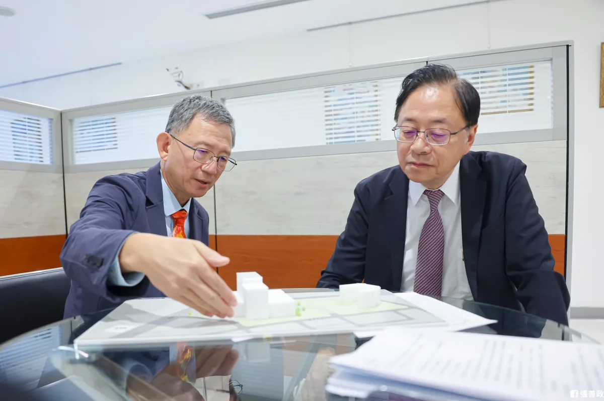
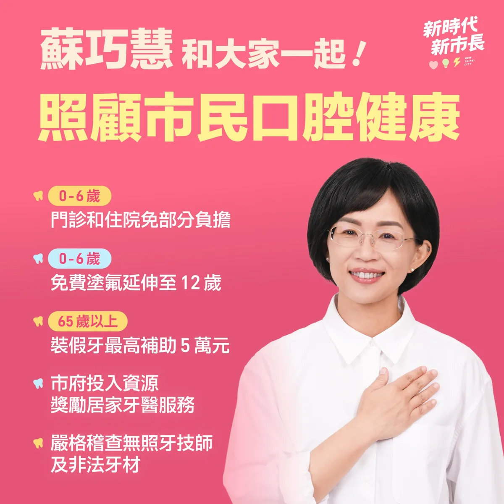
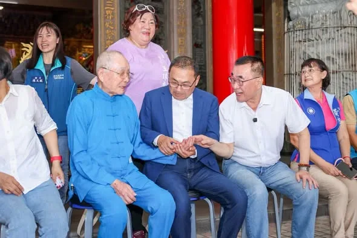
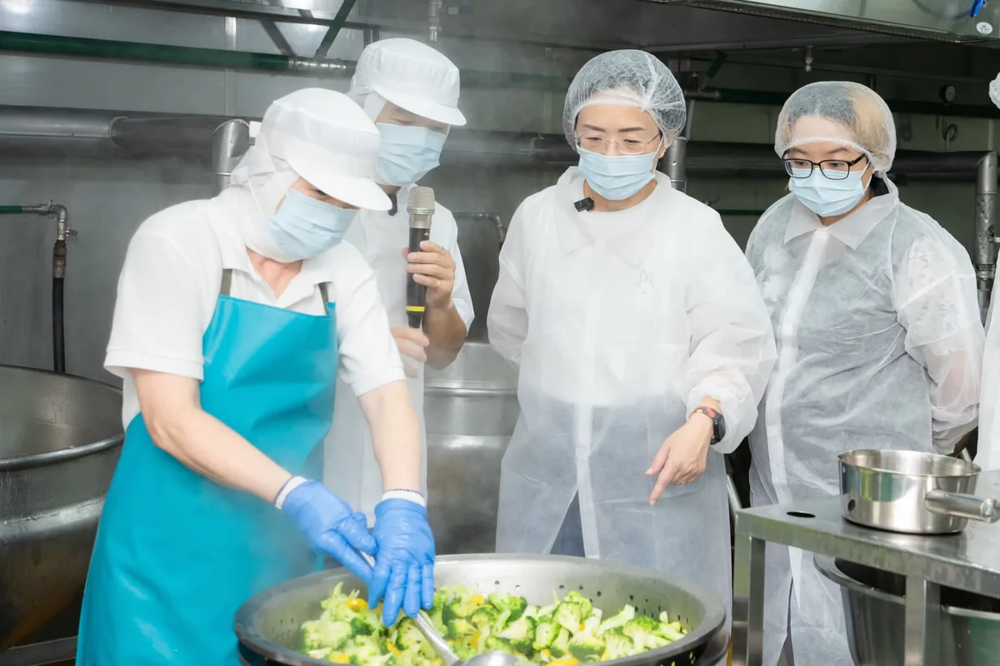
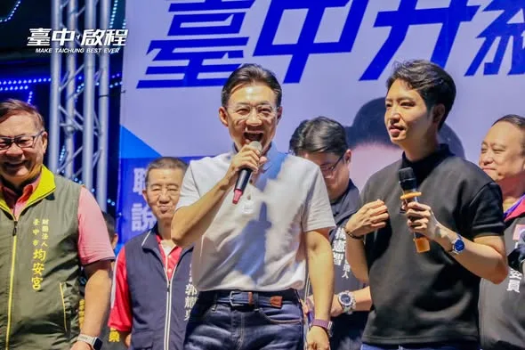

賴瑞隆zenolai
@zenolai:健康的高雄，需要第一線醫護人員共同來守護。 今天，高雄37個醫藥護公會和團體齊聚一堂，正式成立「醫藥護大聯盟後援總會」。謝謝國策顧問莊維周醫師接任總會長，更感謝前衛福部長陳時中專程南下站台，肯定我們能結合中央政策和在地需求，為高雄提出最完整的醫療規劃。 因為深知醫護夥伴日夜守護大家的辛勞，我們更想做醫療人員最堅實的靠山。為了給第一線最實質的支持，今天我也正式提出了「健康高雄2.0」的四大願景。
Posts
@zenolai:健康的高雄，需要第一線醫護人員共同來守護。 今天，高雄37個醫藥護公會和團體齊聚一堂，正式成立「醫藥護大聯盟後援總會」。謝謝國策顧問莊維周醫師接任總會長，更感謝前衛福部長陳時中專程南下站台，肯定我們能結合中央政策和在地需求，為高雄提出最完整的醫療規劃。 因為深知醫護夥伴日夜守護大家的辛勞，我們更想做醫療人員最堅實的靠山。為了給第一線最實質的支持，今天我也正式提出了「健康高雄2.0」的四大願景。


跨越95年踏實堅毅的步伐，走在弘揚母娘神威道路上。 今天是瑤池金母聖誕千秋，一早我與 @hou.yuih 侯友宜市長，一起到蘆洲慈惠堂參拜，拜訪95歲的林堂主。 堂主的奉獻，就如母娘，「為他人想，以慈悲對待眾生。」 還記得，蘆洲慈惠堂過去使用桶裝瓦斯，在引進天然氣管線時，遇上了許多問題，那時我用盡所能，與地方溝通，最後終於完成。 「用心，真理妙法即在眼前」，凡事用心，無愧於心，便能事事順心。 進道場修「佛緣」，與人相處要有「人緣」。我有鄉親的支持，有侯市長的認可，有母娘慈悲的關懷。 未來蘆洲醫院的興建、蘆社大橋的規劃，我都會在侯友宜市長的基礎上，讓三蘆地區有更完善醫療照護，也讓這裡能夠蓬勃發展。 我與蘆洲的淵源很深，願意付出我的一生。

對於孩子遭遇這樣的事情，我和所有關心孩子的人一樣，感到非常心痛與不捨。對我來說，孩子的安全永遠是最優先的考量，每一個孩子，都應該在被好好照顧、被好好保護的環境中長大。 目前孩子已經獲得安置。現在最重要的，是讓孩子能夠安心生活、慢慢復原、平安長大。 去年底市府接獲通報後，社工與專業機構立即介入、執行安全計畫並進行安全評估，家防中心、社會局、警察局等單位也持續投入訪視、面談、輔導及相關課程，接獲通報240天以來累計提供714次服務。目的就是要確保孩子不再受到傷害，同時在專業評估下，盡可能採取對孩子衝擊最小、最符合孩子最佳利益的處遇方式，一步一步陪著孩子走向穩定，給孩子復原所需要的時間與空間。 兒少保護制度永遠可以做得更好。面對每一個孩子，我們不只要確認「有沒有按照制度做」，更要持續思考制度是不是還有不足，保護網是不是還能更緊密。 這些問題，我們不會迴避，只要還有能做得更好的地方，我們會繼續檢視、持續努力。 市府的責任，是成為第一線最有力的後盾。這四年來，我們持續強化社政、教育、警政的橫向合作，建立跨局處兒少保護機制，希望更即時介入；我們也把保護工作向前延伸，從親職教育、家庭支持，到防範網路誘騙等，希望在傷害發生以前，能多一分預防、多一層保護。 如果孩子真的必須離開原生家庭，我們也認同「去機構化」的理念，持續增加寄養家庭、團體家庭等資源，依照每個孩子不同的身心狀況與需求，結合醫療、心理、教育等專業，找到更適合、更穩定的照顧環境。 同時，我也要謝謝所有站在第一線的社工與專業人員。 要保護孩子，也要撐住保護孩子的人。兒少保護工作非常不容易，每一次訪視、每一次面談、每一次評估，都必須在複雜的家庭關係與風險情境中做出專業判斷。 我們會持續與第一線人員並肩作戰，提升社工的待遇、改善工作環境，提供留任獎勵、心理諮商及涉訟協助，讓第一線同仁在守護孩子的同時，也有足夠的支持與後盾。 我們也會持續陪伴、持續關心，提供孩子及第一線專業人員需要的支持與協助。市府團隊會努力，把保護網織得更密、更牢。


毛孩不僅是寵物，更是我們的家人，因此我推出「寵愛毛孩5大安心、1個加碼」，從環境改善、醫療照護、飼主課程、安心認養到寵物產業，全面升級相關政策，希望讓台中成為毛孩可以安心生活的友善城市。 如果你也認同牠們值得更好的照顧，歡迎收看影片，也請幫忙分享，讓更多人一起關心毛孩的權益🐈🐕


因為有大家一起努力，讓桃園市立醫院從一個構想，一步一步走向實現 想跟市民朋友們分享一個最新的好消息，稍早，市府收到衛生福利部正式核發的 #桃園市立醫院設立許可函。 三個禮拜前，內政部都市計畫委員會正式通過八德總院4.8公頃醫院用地的都市計畫變更案，今天看到衛福部的設立許可函，我心裡充滿感謝，也更感責任重大。 從醫療定位、服務量能、醫院整體規劃，到如何真正回應桃園市民的醫療需求，經歷了無數次會議與討論，就是希望把每一個細節都做好。去年也是差不多這個時候，我也親自前往衛福部醫審會簡報，希望爭取中央支持。 桃園籌設市立醫院談了很多年，過去包括院址未定、次醫療區域劃分等問題，始終難以突破。上任後，我們下定決心把問題一一解開。 我要謝謝王明鉅副市長，以及衛生局等相關局處同仁，這一路緊盯進度、協調各方，碰到問題就想辦法解決。因為我們都知道，桃園人口持續成長，市民對醫療的需求，不能一直等下去。 當然，取得設立許可不是終點，而是下一階段工作的開始。 未來的市立醫院，包括以八德總院為核心，在觀音、復興及大溪設置三處分院，逐步建構完整的桃園市立醫院體系，並結合醫療、長照與智慧照護，落實醫養合一，讓桃園市民享有更好的醫療照顧。 我也要特別感謝衛福部、內政部等中央部會的支持，看見桃園人的需求，讓桃園，不再是六都唯一沒有市立醫院的城市，我們會繼續努力打拚，把這間屬於桃園市民的市立醫院，真正建立起來。

@schuanglawyer:中壢最認真，就是黃崇真 @cchuang_0223 ！ 中壢正在面臨交通轉型期，除了鐵路地下化，還有中壢車站跟捷運銜接的重大工程，也同步進行中。崇真議員在議會持續監督，積極對市府提出各項建議，盼望能減少交通黑暗期對市民造成的困擾，加速建設的進度。 對市民來說，大型建設很重要，但每天生活遇到的小事，同樣關鍵。包括大家每天經過的路口安不安全、人行道好不好走。他把大家的需求放在心上，會勘、協調一件件解決，三年半以來服務超過6千件，真的非常拚。 崇真的溫暖，不只對有選票的大人。當他發現青少年自傷率愈來愈高，未成年孩子的心理健康出現危機時，也全力積極強化心輔資源，守護下一代。 這些年來，南桃園人口持續成長，醫療需求相當迫切，但在張善政任內大型醫院計畫停滯，遲遲沒有進展。未來世杰當市長，一定會盡快補上，我主張優先發展癌症、急重症、兒童等特色醫療。長期目標就是要為桃園爭取第二座醫學中心，讓醫療量能跟上城市發展的腳步。 感謝到場的市民朋友不畏風雨，把活動中心坐滿。大事盯緊、小事做好，是崇真跟世杰共同的堅持。11/28，需要大家給我們更多支持，讓最打拚的議員跟市長聯手做更多！讓心中壢 動起來💖

台中犬貓登記近38萬隻，毛孩早已是許多家庭重要的一份子！而台中號稱是「獸醫與他們的產地」，可見動物相關產業、醫療在台中的發展。 高中大學時期，我曾養過一隻馬爾濟斯，陪伴家人長達11年，這段時光至今仍是我心中非常珍貴的記憶。 今天我提出「寵愛毛孩5大安心、1個加碼」政策，希望能夠打造更全面、更友善友善的寵物欣樂園！ 1️⃣ 友善環境安心 升級公園寵物專區、串聯毛孩友善店家。 2️⃣ 醫療量能安心 鼓勵動物醫院增加夜間急診，培育動物醫事助理人才。 3️⃣ 飼主學習安心 免費提供照護、行為、清潔美容及生命教育課程。 4️⃣ 動物領養安心 提升收容品質、打擊非法繁殖；公立動物之家認養再加碼500元疫苗補助＋免費基礎健檢。 5️⃣ 寵物產業安心 強化寵物食品、寄養、美容等專業培訓。 ⭐ 再加碼500元「台中版寵物券」 設籍台中、毛孩完成寵物登記即可申請，減輕飼主負擔，也支持在地寵物產業。 寵物是我們的家人，值得我們好好照顧❤️


巧慧照顧市民口腔健康！政見一次看🦷 1️⃣ 0至6歲門診和住院 #免部分負擔。 2️⃣ 0至6歲每半年一次的 #免費塗氟延伸至12歲。 3️⃣ #長輩假牙補助最高5萬元，中低收入戶長輩最高8萬元、低收入戶長輩最高12萬元。 4️⃣ 市府提供交通與人力等補助，擴大到宅與到機構的「#居家牙醫服務」。 5️⃣ #嚴格稽查 無照牙技師與非法牙材。 從小朋友的塗氟防蛀、長輩的假牙補助，到深入社區的居家醫療，未來我會攜手專業團隊，完善醫療資源，守護全體市民的口腔健康！

@su.chiaohui:看到有這麼多中醫師願意上台支持我，真的讓人很感動。過去十年，我和大家並肩努力，未來我當市長，會和大家一起繼續推動中醫藥發展： ✅ 市立醫院設立「中西醫復健病房」。 ✅ 補助中醫投入長照服務，走進社區據點、推動居家醫療，並加碼獎勵偏鄉服務。 ✅ 結合智慧科技，善用科技輔助診療。 我會繼續努力，照顧市民朋友，打造更健康的新北！

協同行政院長 卓榮泰 來到衛福部台中醫院，一起觀摩 #健保復健病房 的試辦狀況。 為了讓長輩獲得更好的照顧，中央投入3億元推動健保復健病房計畫，讓符合條件的中風患者能透過積極復健，縮短恢復期，早日重返日常生活。 長輩的健康，就是家庭的幸福，未來我會持續爭取中央加碼投資台中的長照資源，並持續推動 #老人健保補助，讓台中的長輩能夠安心、健康地享受晚年生活。

來三重和孩子們一起同樂 打造友善育兒的新北市！ 這幾天，我接連參加 #李倩萍、 #顏蔚慈 議員舉辦的親子活動，和孩子一起看精彩的《蟲蟲馬戲樂園》，還一起在公園玩超有趣的泡泡，大家真的都玩瘋了！ 最開心的是，一到現場就聽到好多孩子大喊「水獺媽媽！」還主動跟我打招呼、擊掌，大家都有認真聽故事、學台語喔！ 除了陪伴孩子長大，我也要做爸爸媽媽最可靠的隊友。未來，我要打造95公分視角城市，從孩子的高度重新檢視公共空間，也會推動0到6歲看病免門診及住院部分負擔、6歲以下腸病毒及輪狀病毒疫苗免費，並增加 夜間托育、建置 臨時托育查詢平台，讓育兒家庭有更大的支持。 我也會和倩萍、蔚慈一起努力，推動 「三重2.0」，加速第二行政中心、市圖第二總館、三重聯醫第三醫療大樓等重大建設；在蘆洲推動蘆南和蘆北重劃區、蘆社大橋，緊盯捷運北環段工程進度。 我會繼續帶著新北隊努力，為大家打造更友善育兒家庭的新北市！

跨越95年踏實堅毅的步伐，走在弘揚母娘神威道路上。 今天是瑤池金母聖誕千秋，一早我與 侯友宜 市長，一起到蘆洲慈惠堂參拜，拜訪95歲的林堂主。 堂主的奉獻，就如母娘，「為他人想，以慈悲對待眾生。」 還記得，蘆洲慈惠堂過去使用桶裝瓦斯，在引進天然氣管線時，遇上了許多問題，那時我用盡所能，與地方溝通，最後終於完成。 「用心，真理妙法即在眼前」，凡事用心，無愧於心，便能事事順心。 進道場修「佛緣」，與人相處要有「人緣」。我有鄉親的支持，有侯市長的認可，有母娘慈悲的關懷。 未來蘆洲醫院的興建、蘆社大橋的規劃，我都會在侯友宜市長的基礎上，讓三蘆地區有更完善醫療照護，也讓這裡能夠蓬勃發展。 我與蘆洲的淵源很深，願意付出我的一生。

一起來打匹克球！ 我和 @pumashen 沈伯洋、@hunglutw 張宏陸、@fanyunig 范雲一起在鶯歌國民運動中心打匹克球！匹克球果然是適合全年齡的運動，我們在Allen教練的教導下立刻上手！ 我和沈伯洋也分別提出了各項運動政見，未來在新北市，我不只要 #確保各項運動場館及設備充足 ，我也要實施 #職場微型運動計畫 ，補助企業購入器材、開設課程，讓大家可以利用上班空檔運動。 同時，我也提出 #心理健康支持3加3方案 ，在現有衛福部的基礎上，再加碼三次免費心理諮商，讓大家身體、心理都健康！ 讓運動成為大家的日常，也要讓運動產業在新北繼續發展！

@su.chiaohui:開學前夕，我特別穿上無塵衣，走進汐止的食家安 團膳廚房，一一觀察從環境清潔、食材挑選、烹煮到供餐的過程，也和現場許多團膳業者交流，瞭解實務狀況與需求。 今年年初，我就提出✨免費營養午餐的政見。未來我擔任市長，會持續精進校園供餐品質，並結合✨食農教育，讓孩子在吃飯的過程中，更認識新北這片土地。 我也會推動✨3章1Q擴大實施，向上延伸到高中職、向下延伸到幼兒園，讓全新北的師生都吃得更在地、更安全！ 同時，感謝團膳業者照顧師生的健康，未來市府要✨照顧照顧者，透過補助食安設備升級、持續推動食安智慧監控系統，以最高標準守護新北孩子的飲食安全！

因為有大家一起努力，讓桃園市立醫院從一個構想，一步一步走向實現 想跟市民朋友們分享一個最新的好消息，稍早，市府收到衛生福利部正式核發的 #桃園市立醫院設立許可函。 三個禮拜前，內政部都市計畫委員會正式通過八德總院4.8公頃醫院用地的都市計畫變更案，今天看到衛福部的設立許可函，我心裡充滿感謝，也更感責任重大。 從醫療定位、服務量能、醫院整體規劃，到如何真正回應桃園市民的醫療需求，經歷了無數次會議與討論，就是希望把每一個細節都做好。去年也是差不多這個時候，我也親自前往衛福部醫審會簡報，希望爭取中央支持。 桃園籌設市立醫院談了很多年，過去包括院址未定、次醫療區域劃分等問題，始終難以突破。上任後，我們下定決心把問題一一解開。 我要謝謝王明鉅副市長，以及衛生局等相關局處同仁，這一路緊盯進度、協調各方，碰到問題就想辦法解決。因為我們都知道，桃園人口持續成長，市民對醫療的需求，不能一直等下去。 當然，取得設立許可不是終點，而是下一階段工作的開始。 未來的市立醫院，包括以八德總院為核心，在觀音、復興及大溪設置三處分院，逐步建構完整的桃園市立醫院體系，並結合醫療、長照與智慧照護，落實醫養合一，讓桃園市民享有更好的醫療照顧。 我也要特別感謝衛福部、內政部等中央部會的支持，看見桃園人的需求，讓桃園，不再是六都唯一沒有市立醫院的城市，我們會繼續努力打拚，把這間屬於桃園市民的市立醫院，真正建立起來。

中壢最認真，就是黃崇真 Huang Chung-Chen！ 中壢正在面臨交通轉型期，除了鐵路地下化，還有中壢車站跟捷運銜接的重大工程，也同步進行中。崇真議員在議會持續監督，積極對市府提出各項建議，盼望能夠減少交通黑暗期對市民造成的困擾，加速建設的進度。 對市民來說，大型建設很重要，但每天生活遇到的小事，同樣關鍵。包括大家每天經過的路口安不安全、人行道好不好走。他把大家的需求放在心上，會勘、協調一件件解決，三年半以來服務超過6千件，真的非常拚。 崇真的溫暖，不只對有選票的大人。當他發現青少年自傷率愈來愈高，未成年孩子的心理健康出現危機時，也全力積極強化心輔資源，守護下一代。 這些年來，南桃園人口持續成長，醫療需求相當迫切，但在張善政任內大型醫院計畫停滯，遲遲沒有進展。未來世杰當市長，一定會盡快補上這個洞，我主張優先發展癌症、急重症、兒童等特色醫療。長期目標就是要為桃園爭取第二座醫學中心，讓醫療量能跟上城市發展的腳步。 感謝到場的市民朋友不畏風雨，把活動中心坐滿。謝謝我的競總主委范振修資政、南區競總黃仁杼總幹事、張火爐主委、黃傅淑香主委、舊明里羅善婷里長、興南里葉青旺里長、中建里李應偉里長、中央里楊萬焙里長、普義里黃崇修里長、永福里黃寶貞里長、中壢慈惠堂陳燦宏榮譽董事長，都現身給我們支持。 大事盯緊、小事做好，是崇真跟世杰共同的堅持。11/28，需要大家給我們更多支持，讓最打拚的議員跟市長聯手為地方做更多！讓心中壢 動起來💖

何欣純推出「寵愛毛孩5大安心、1個加碼」 打造毛孩欣樂園🐈🐕 台中犬貓登記數近38萬，數量居全國第二；全市有近300家動物醫院及1,045位獸醫師，動物醫療資源全國第一；特定寵物業許可證多達550家，合法寵物業者數量也是全國第一。台中已經是一座名副其實的「寵物城市」。 面對這麼龐大的毛孩家庭與寵物產業，我們更應該升級友善毛孩政策，讓飼主更安心、毛孩更幸福，因此我推出「寵愛毛孩5大安心、1個加碼」： 1️⃣友善環境安心 ▪️升級公園寵物專區 ▪️在台中通APP增設毛孩友善專區，串聯寵物友善店家 2️⃣醫療量能安心 ▪️補助動物醫院增加夜間急診服務 ▪️設籍台中、具高中職以上學歷的市民參加農業部認證「動物醫事助理培訓」，取得合格證書並完成登錄後，在台中市動物醫院任職滿一年以上，可申請全額補助培訓費用 3️⃣飼主學習安心 增加補助公協會或動保團體開辦寵物日常照顧、行為互動、清潔美容及生命教育等課程，免費開放台中市民報名 4️⃣動物領養安心 ▪️加強查緝非法繁殖及來源不明犬貓販售 ▪️提升動物之家醫療、行為訓練及收容品質 ▪️市民至公立動物之家認領養犬貓，除現有晶片、絕育、狂犬病疫苗及寵物登記免費，加碼補助首次疫苗施打費500元及免費基礎健檢一次 5️⃣寵物產業安心 擴大辦理寵物用食品、寄養及美容等從業人員專業培訓與在職進修 ⭐加碼500元「台中版寵物券」 ▪️飼主設籍台中、毛孩完成寵物登記，即可線上申請台中版寵物券 ▪️未來將擴大媒合寵物相關產業及農漁會加入，支持飼主也帶動在地消費 毛孩不僅是寵物，更是我們家庭的一份子，在高中大學時期，我曾養過一隻馬爾濟斯，陪伴家人長達11年，這段時光至今仍是我心中非常珍貴的記憶。 如果你也認同毛孩值得更好的照顧，1128懇請大家用手中的一票支持我，讓我有機會為台中的毛孩家庭，打造一座更友善、更有溫度的城市！ #心存大台中 #市長換欣_台中創新

巧慧照顧市民口腔健康！政見一次看🦷 1️⃣ 0至6歲門診和住院 #免部分負擔。 2️⃣ 0至6歲每半年一次的 #免費塗氟延伸至12歲。 3️⃣ #長輩假牙補助最高5萬元，中低收入戶長輩最高8萬元、低收入戶長輩最高12萬元。 4️⃣ 市府提供交通與人力等補助，擴大到宅與到機構的「#居家牙醫服務」。 5️⃣ #嚴格稽查 無照牙技師與非法牙材。 從小朋友的塗氟防蛀、長輩的假牙補助，到深入社區的居家醫療，未來我會攜手專業團隊，完善醫療資源，守護全體市民的口腔健康！

看到有這麼多中醫師願意上台支持我，真的讓人很感動。 過去十年，我和大家一起推動《#中醫藥發展法》、成功爭取「#中醫藥振興計畫」，也持續爭取設立「#國家中醫研究院」。我也藉機會向各位醫師提出各項政見，未來我當市長，會和大家一起繼續推動中醫藥發展： ✅ 市立醫院設立「#中西醫復健病房」。 ✅ 補助中醫投入 #長照服務，走進社區據點、推動居家醫療，並加碼獎勵 #偏鄉服務。 ✅ 結合 #智慧科技，善用科技輔助診療。 我會繼續努力，照顧市民朋友，打造更健康的新北！

@su.chiaohui:牙醫界挺巧慧！非常感謝 @taipeishihchung 陳時中政委、@wen_shih_cheng 温世政南投縣長候選人，還有數百位牙醫、牙技、牙材產業好朋友站出來支持我！ 這麼多年來，我們一起在立法院支持醫界，守護國人健康。未來，我也要繼續和大家並肩努力，擴大照顧市民的口腔健康❤️

@hammer__lee:跨越95年踏實堅毅的步伐，走在弘揚母娘神威道路上。 今天是瑤池金母聖誕千秋，一早我與 侯友宜 市長，一起到蘆洲慈惠堂參拜，拜訪95歲的林堂主。 堂主的奉獻，就如母娘，「為他人想，以慈悲對待眾生。」 還記得，蘆洲慈惠堂過去使用桶裝瓦斯，在引進天然氣管線時，遇上了許多問題，那時我用盡所能，與地方溝通，最後終於完成。 「用心，真理妙法即在眼前」，凡事用心，無愧於心，便能事事順心。 進道場修「佛緣」，與人相處要有「人緣」。我有鄉親的支持，有侯市長的認可，有母娘慈悲的關懷。 未來蘆洲醫院的興建、蘆社大橋的規劃，我都會在侯友宜市長的基礎上，讓三蘆地區有更完善醫療照護，也讓這裡能夠蓬勃發展。 我與蘆洲的淵源很深，願意付出我的一生。

#發兩萬、#打皮蛇、#卡好用！今晚來到西區均安宮，一上臺就和王育敏、羅廷瑋委員一起喊出三句最實在的「幸福加給」💪 國民黨在國會持續爭取全民普發2萬元；在臺中，將優先針對65歲以上長者，以及重症、弱勢等高風險族群，經醫師評估後補助帶狀疱疹疫苗，未來再視財政逐步擴大補助範圍；敬老愛心卡每月1,000點不減，當月未使用完的點數可累積，並於年底歸零。計程車、掛號、指定藥局、YouBike及國民運動中心都能用，也規劃 #一定額度可以到農漁會購物，真正「卡好用」！ 啟臣把競選總部設在西區，因為這裡承載著臺中的根與靈魂。未來要活化歷史空間、推動 #一市場一特色，改善公有市場的燈光、空調及整體購物環境，並串聯商圈、購物節與會展人流，讓老城找回榮光，也為年輕人創造新機會。 從長輩照顧到親子友善，從百年市場到文化復興，臺中升級不只是蓋更多建築，更要讓每一代都能在這裡安居、圓夢！ #臺中升級 #幸福加給 #西區 #舊城復興 #臺中啟程 #打造旗艦城

一起來打匹克球！ 我和 台北 沈伯洋、張宏陸、范雲 FAN, Yun 一起在鶯歌國民運動中心打匹克球！匹克球果然是適合全年齡的運動，我們在Allen教練的教導下立刻上手！ 我和沈伯洋也分別提出了各項運動政見，未來在新北市，我不只要 #確保各項運動場館及設備充足 ，我也要實施 #職場微型運動計畫 ，補助企業購入器材、開設課程，讓大家可以利用上班空檔運動。 同時，我也提出 #心理健康支持3加3方案 ，在現有衛福部的基礎上，再加碼三次免費心理諮商，讓大家身體、心理都健康！ 讓運動成為大家的日常，也要讓運動產業在新北繼續發展！

@a_chun1973:我提出「寵愛毛孩5大安心、1個加碼」，打造更全面、更友善的寵物欣樂園！ 1️⃣ 友善環境安心 升級公園寵物專區、串聯毛孩友善店家。 2️⃣ 醫療量能安心 鼓勵動物醫院增加夜間急診，培育動物醫事助理人才。 3️⃣ 飼主學習安心 免費提供照護、行為、清潔美容及生命教育課程。 4️⃣ 動物領養安心 提升收容品質、打擊非法繁殖；公立動物之家認養再加碼500元疫苗補助＋免費基礎健檢。 5️⃣ 寵物產業安心 強化寵物食品、寄養、美容等專業培訓。 ⭐ 再加碼500元「台中版寵物券」 設籍台中、毛孩完成寵物登記即可申請，減輕飼主負擔，也支持在地寵物產業。

中壢最認真，就是黃崇真 @cchuang_0223 ！ 中壢正在面臨交通轉型期，除了鐵路地下化，還有中壢車站跟捷運銜接的重大工程，也同步進行中。崇真議員在議會持續監督，積極對市府提出各項建議，盼望能夠減少交通黑暗期對市民造成的困擾，加速建設的進度。 對市民來說，大型建設很重要，但每天生活遇到的小事，同樣關鍵。包括大家每天經過的路口安不安全、人行道好不好走。他把大家的需求放在心上，會勘、協調一件件解決，三年半以來服務超過6千件，真的非常拚。 崇真的溫暖，不只對有選票的大人。當他發現青少年自傷率愈來愈高，未成年孩子的心理健康出現危機時，也全力積極強化心輔資源，守護下一代。 這些年來，南桃園人口持續成長，醫療需求相當迫切，但在張善政任內大型醫院計畫停滯，遲遲沒有進展。未來世杰當市長，一定會盡快補上這個洞，我主張優先發展癌症、急重症、兒童等特色醫療。長期目標就是要為桃園爭取第二座醫學中心，讓醫療量能跟上城市發展的腳步。 感謝到場的市民朋友不畏風雨，把活動中心坐滿。謝謝我的競總主委范振修資政、南區競總黃仁杼總幹事、張火爐主委、黃傅淑香主委、舊明里羅善婷里長、興南里葉青旺里長、中建里李應偉里長、中央里楊萬焙里長、普義里黃崇修里長、永福里黃寶貞里長、中壢慈惠堂陳燦宏榮譽董事長，都現身給我們支持。 大事盯緊、小事做好，是崇真跟世杰共同的堅持。11/28，需要大家給我們更多支持，讓最打拚的議員跟市長聯手為地方做更多！讓心中壢 動起來💖

@a_chun1973:台中犬貓登記近38萬隻，毛孩早已是許多家庭重要的一份子！而台中號稱是「獸醫與他們的產地」，可見動物相關產業、醫療在台中的發展。 高中大學時期，我曾養過一隻馬爾濟斯，陪伴家人長達11年，這段時光至今仍是我心中非常珍貴的記憶。 今天我提出「寵愛毛孩5大安心、1個加碼」政策，希望能夠打造更全面、更友善友善的寵物欣樂園！ 1️⃣ 友善環境安心 升級公園寵物專區、串聯毛孩友善店家。 2️⃣ 醫療量能安心 鼓勵動物醫院增加夜間急診，培育動物醫事助理人才。 3️⃣ 飼主學習安心 免費提供照護、行為、清潔美容及生命教育課程。 4️⃣ 動物領養安心 提升收容品質、打擊非法繁殖；公立動物之家認養再加碼500元疫苗補助＋免費基礎健檢。 5️⃣ 寵物產業安心 強化寵物食品、寄養、美容等專業培訓。 ⭐ 再加碼500元「台中版寵物券」 設籍台中、毛孩完成寵物登記即可申請，減輕飼主負擔，也支持在地寵物產業。 寵物是我們的家人，值得我們好好照顧❤️

@su.chiaohui:巧慧照顧市民口腔健康！政見一次看🦷 從小朋友的塗氟防蛀、長輩的假牙補助，到深入社區的居家醫療，未來我會攜手專業團隊，完善醫療資源，守護全體市民的口腔健康！
Thank you to the TCM doctors for your support! Let's build a healthier New Taipei together

看到有這麼多中醫師願意上台支持我，真的讓人很感動。 過去十年，我和大家一起推動《#中醫藥發展法》、成功爭取「中醫藥振興計畫」，也持續爭取設立「國家中醫研究院」。我也藉機會向各位醫師提出各項政見，未來我當市長，會和大家一起繼續推動中醫藥發展： ✅ 市立醫院設立「#中西醫復健病房」。 ✅ 補助中醫投入 #長照服務，走進社區據點、推動居家醫療，並加碼獎勵 #偏鄉服務。 ✅ 結合 #智慧科技，善用科技輔助診療。 我會繼續努力，照顧市民朋友，打造更健康的新北！

牙醫界挺巧慧！非常感謝 陳時中 政委、温世政 Wen Shih-cheng 南投縣長候選人，還有數百位牙醫、牙技、牙材產業好朋友站出來支持我！ 這麼多年來，我們一起在立法院支持醫界，守護國人健康。未來，我也要繼續和大家並肩努力，擴大照顧市民的口腔健康。 ✅ 加強長者牙口與生活照顧 在陳時中政委、阿中部長的建議下，我宣布除了原有政見「長輩假牙補助最高5萬元」，針對中低收入戶及低收入戶長者，要分別加碼提供 #最高8萬元 與 #最高12萬元 補助，讓新北的每一位長輩都活得健康有尊嚴。 ✅ 落實兒童口腔預防醫學 我會將現行0至6歲每半年一次的 #免費塗氟延伸至12歲，從源頭減少小朋友蛀牙的機會，也會推動 #0至6歲門診和住院免部分負擔，減輕家庭壓力。 ✅ 投入資源補缺口、挺專業 為了落實醫療平權、照顧行動不便者，市府會提供獎勵，擴大到宅與到機構的「#居家牙醫服務」，並配合牙技師推動「假牙身分證」，嚴格稽查無照牙技師與非法牙材，支持、保障專業，也守護民眾健康。 倒數97天，做伙拚、做伙贏！一起照顧更多市民朋友！